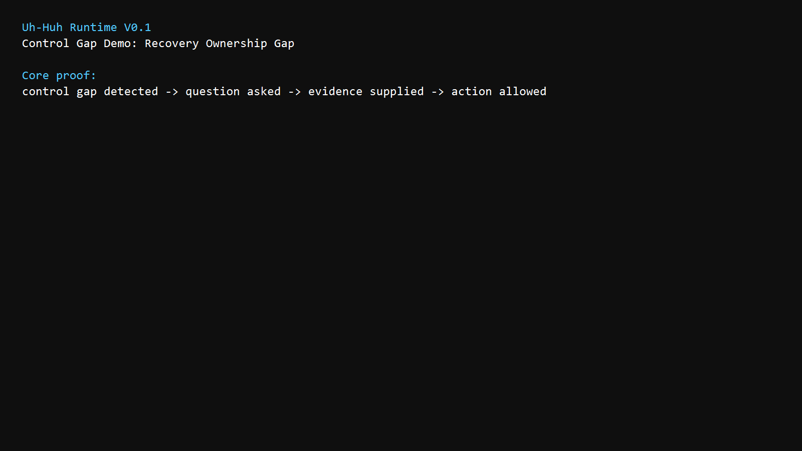
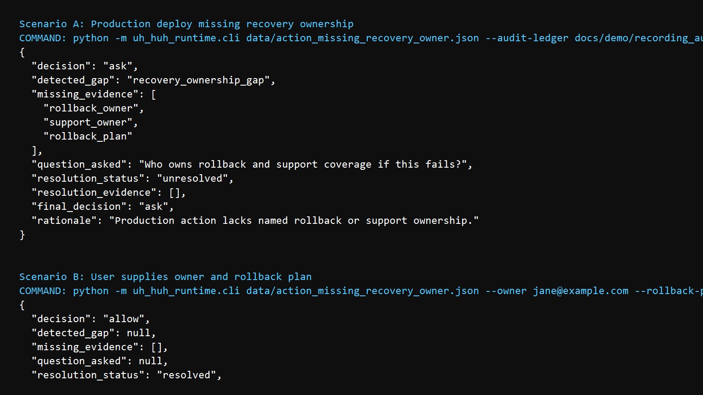
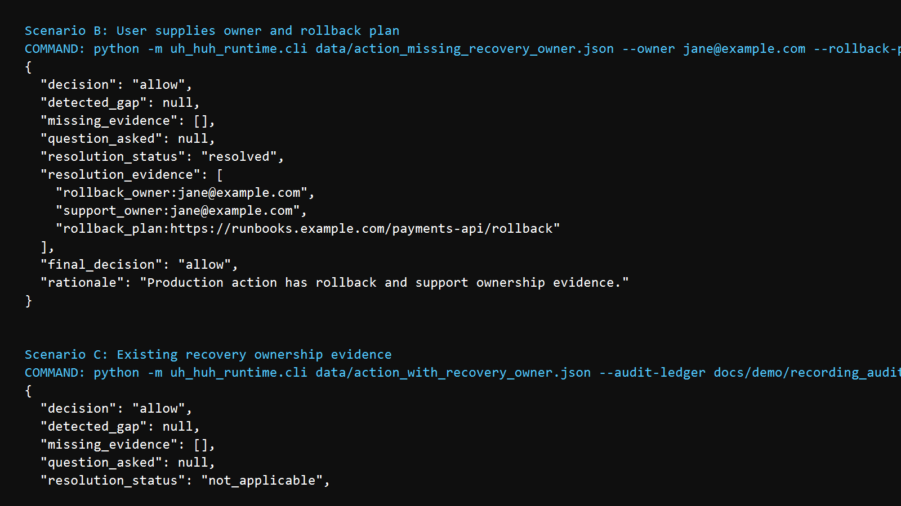
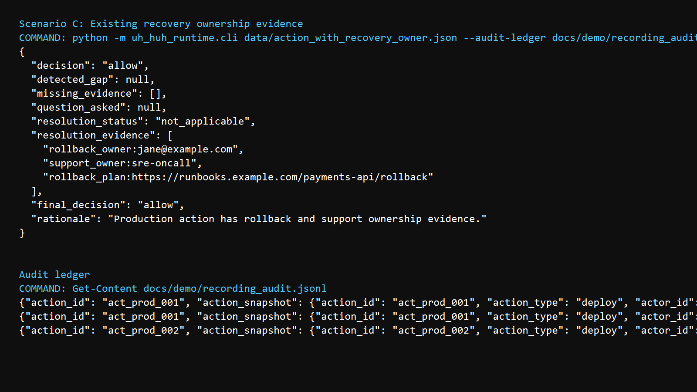
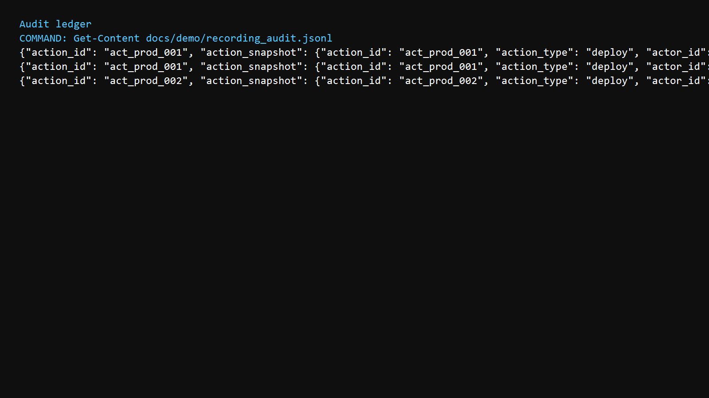
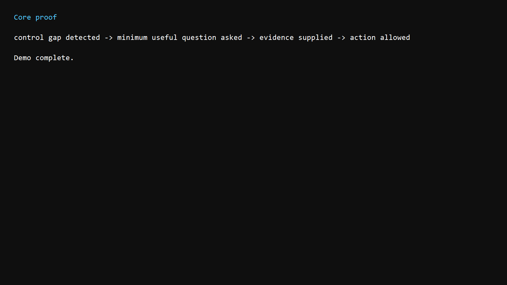

Uh-Huh Runtime V0.1 Demo Storyboard
Use this storyboard to assemble a 60-90 second silent or voiceover demo.
1. Title

Voiceover: Uh-Huh Runtime is a governance prototype for AI agents before they take consequential actions.
2. Missing Owner

Voiceover: The agent proposes a production deploy with no rollback owner, no support owner, and no rollback plan.
3. Supplied Owner

Voiceover: The user supplies ownership evidence, resolving the control gap.
4. Existing Owner

Voiceover: If ownership already exists, Uh-Huh allows the action immediately.
5. Audit

Voiceover: Every decision writes an audit record.
6. Close

Voiceover: Control gap detected, minimum useful question asked, evidence supplied, action allowed.